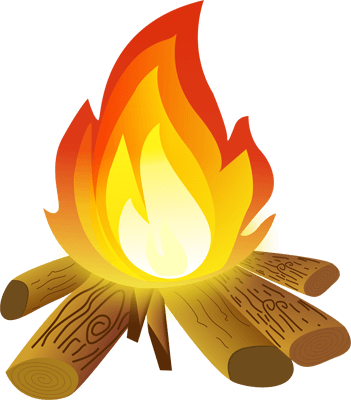

Universidad Prehistórica Unga! Unga!
Bienvenid@ a la página principal de la Universidad Prehistórica Unga! Unga!, la universidad más antigua del mundo. En nuestras aulas se formaron los primeros eruditos del planeta y nuestros grupos de investigación descubrieron el fuego y aprendieron a manipularlo, sin lo cual no sería posible toda la tecnología que conocemos hoy en día. Además, en esta universidad creamos la primera enciclopedia y escribimos el primer libro de historia (menos mal que por aquel entonces tampoco había mucho que contar).
A pesar de haber pasado más de un millón de años, nuestra universidad sigue impartiendo clases y ofreciendo una amplia gama de carreras universitarias: Caza del Mamut, Ingeniería Lítica, Creación de Herramientas, Diseño de Cuevas, Artes Chamánicas, Pintura Rupestre...etc.
Si estás interesad@ en estudiar en nuestra universidad, solo tienes que realizar nuestro examende acceso. Si sacas más de un 5, podrás entrar en cualquiera de las carreras que ofrecemos. A continuación tienes más información sobre nuestro examen de acceso.
Examen de Acceso
El examen de acceso a la Univerdad Prehistórica Unga! Unga! consta de 10 preguntas de conocimiento general acerca de la época de los dinosaurios y la época de nuestros antepasados. Para aprobar el examen tienes que contestar todas las preguntas y hacer click en la hoguera antes de que el  dinosaurio llegue a ésta. Si no te ha dado tiempo, en cuanto el dinosaurio llegue al fuego (tarda 5 minutos), el examen se autocorregirá con las preguntas que te haya dado tiempo a contestar. ¡Mucha suerte!
dinosaurio llegue a ésta. Si no te ha dado tiempo, en cuanto el dinosaurio llegue al fuego (tarda 5 minutos), el examen se autocorregirá con las preguntas que te haya dado tiempo a contestar. ¡Mucha suerte!